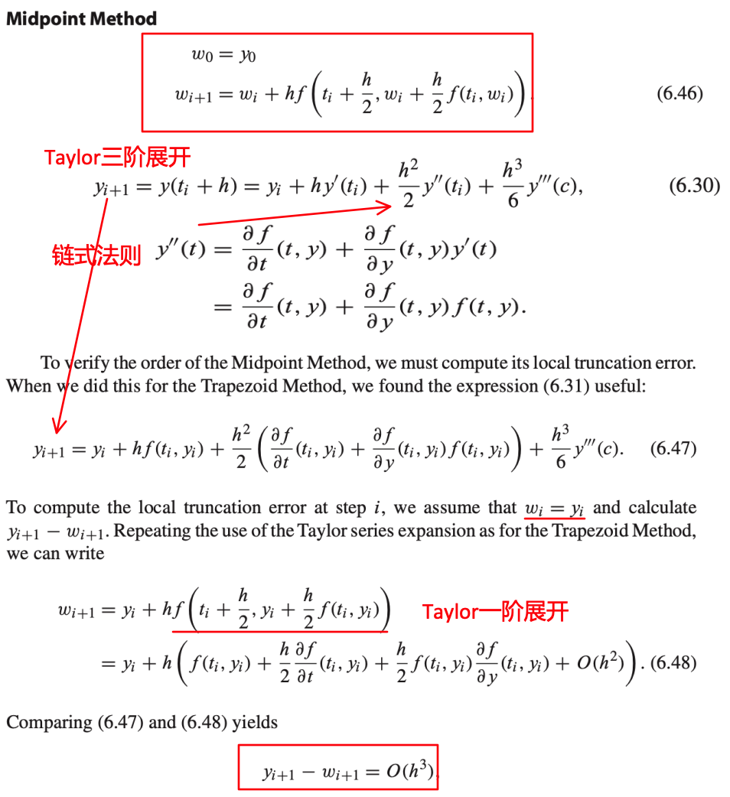
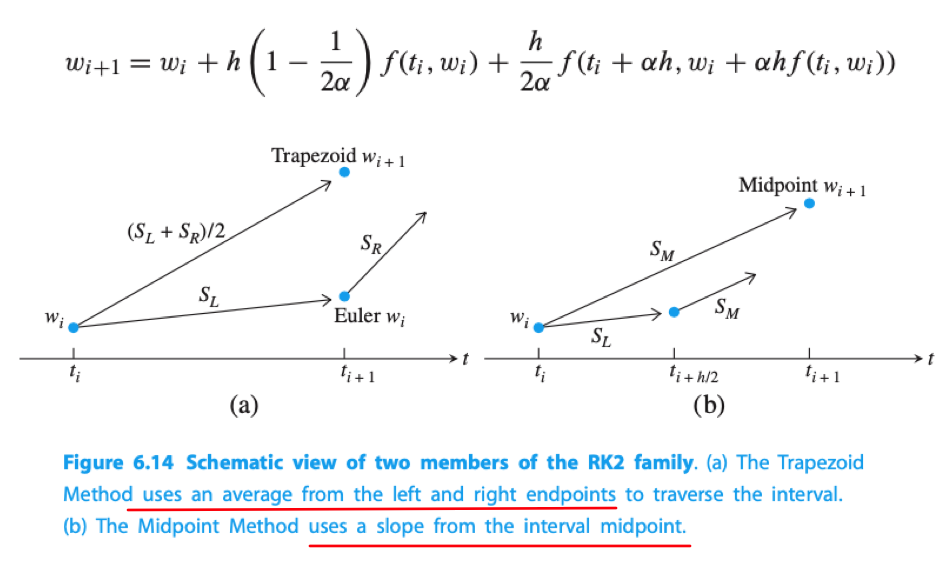
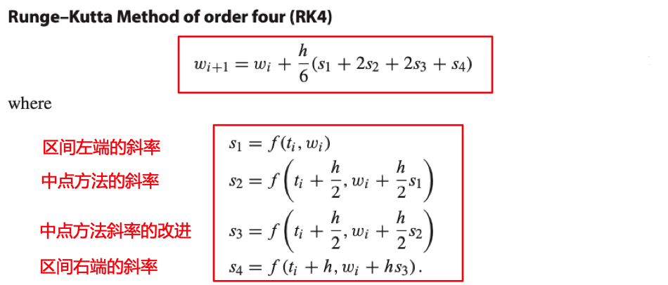
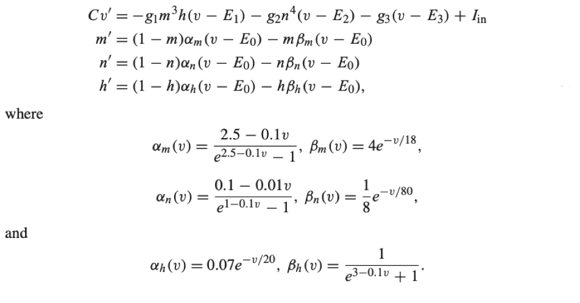

Runge Kutta 方法
OrdinaryDifferentialEquation.hodgkin_huxleyOrdinaryDifferentialEquation.rk4OrdinaryDifferentialEquation.rk_midpoint
Runge Kutta 方法是一组ODE求解器。包含了欧拉和梯形方法，以及更复杂的高阶方法
中点方法
OrdinaryDifferentialEquation.rk_midpoint — MethodRunge Kutta的中点方法
rk_midpoint(df, a, b, y_0, n)我们已知欧拉方法是一阶方法，梯形方法是二阶方法。除了梯形方法外，还有其他的Runge Kutta类型的二阶方法，如这里的中点方法

由以上推导可知，中点方法是二阶方法
下式是右侧的每个函数求值被称为方法的阶段(stage)。梯形方法和中点方法都是二阶段的二阶Runge Kutta方法家族中的成员。 当$\alpha=1$对应显示梯形方法，当$\alpha=1/2$对应中点方法

梯形方法和中点方法：
- 梯形方法是在区间的右端使用一步欧拉方法求值，估计右端的斜率，然后与左端的斜率求平均
- 中点方法是使用一步欧拉方法移动到区间中点，计算出中点的斜率，然后使用它来作为更新点
它们使用了不同方法来求解相同的问题：获取一个比欧拉方法更好的斜率表示整个区间，而欧拉方法仅仅在区间左端进行一次斜率估计
Example
julia> test_method(rk_midpoint) # 分别表示：步数 步长 误差
10×3 Array{Float64,2}:
5.0 0.2 0.0227446
10.0 0.1 0.00614341
20.0 0.05 0.00159519
40.0 0.025 0.000406308
80.0 0.0125 0.00010252
160.0 0.00625 2.57482e-5
320.0 0.003125 6.45182e-6
640.0 0.0015625 1.6148e-6
1280.0 0.00078125 4.03932e-7
2560.0 0.000390625 1.01012e-7 4阶 Runge Kutta 方法
OrdinaryDifferentialEquation.rk4 — Method4阶 Runge Kutta方法(RK4)
rk4(df, a, b, y_0, n)
可以使用同中点方法一样的方式证明出上面的公式是一个4阶的公式。另外这种方法由于本身比较简单且容易编程实现，因此比较流行。 并且它是一个单步方法，所以开始只需要一个初始条件，但是它作为一个4阶方法，精度要比欧拉方法和梯形方法要高很多。
Example
julia> test_method(rk4) # 分别表示：步数 步长 误差
10×3 Array{Float64,2}:
5.0 0.2 2.37881e-5
10.0 0.1 1.46547e-6
20.0 0.05 9.03543e-8
40.0 0.025 5.59829e-9
80.0 0.0125 3.48198e-10
160.0 0.00625 2.17069e-11
320.0 0.003125 1.35469e-12
640.0 0.0015625 8.50431e-14
1280.0 0.00078125 5.10703e-15
2560.0 0.000390625 5.55112e-15计算机仿真：Hodgkin Huxley神经元
OrdinaryDifferentialEquation.hodgkin_huxley — Method计算机仿真: Hodgkin Huxley神经元
Hodgkin Huxley神经元由4个耦合的微分方程组成，其中一个对神经元内外的电压差异进行建模，其他3个方程对离子通道中的 激活级进行建模，这交换了内外的钠离子和钾离子(生物学知识...)。。。
方程如下：

关于方程：
- $v'$：表示单位面积电流方程
- $m'、n'、h'$：关于m、n、h的激活方程
关于系数：
- $C$：表示神经元薄膜的电容
- $g_i$`: 表示电导系数
- $E_i$`: 表示反向电位(电压)
- $I_{in}$: 表示从其他细胞来的输入电流